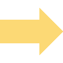

<!-- metrics info box-->
<div id="metrics" class="graph-box" ng-class="{'successful-gradient': ChangeList.gradientClass(change.metrics.succeed),
                                               'failed-gradient': !ChangeList.gradientClass(change.metrics.succeed)}">
    <header>Metrics</header>
    <div class="mtr-content">
        <div class="mtr-arrow" ng-repeat="metric in change.metrics.details">
            <div>
                <div ng-switch="ChangeList.getMetricPointer(metric.score)">
                    
                    
                    
                    
                </div>
                <span class="mtr-arrow-amount">{{metric.score.current}}</span>
            </div>
            <span class="mtr-arrow-desc">{{metric.name | capitalize}}</span>
        </div>
    </div>
</div>
<!-- metrics info box-->

<!-- build info box-->
<div id="build" class="graph-box" ng-class="{'successful-gradient': ChangeList.gradientClass(change.build.succeed),
                                               'failed-gradient': !ChangeList.gradientClass(change.build.succeed)}">
    <header>Build</header>
    <div class="content">
        <div class="operation-imgs">
            <div>
                
                <span>Debug</span></div>
            <div>
                
                <span>Release</span></div>
        </div>
        <div class="operation-date">
            <span> {{::ChangeList.humanDate(change.build.date)}}</span>
        </div>
    </div>
</div>
<!-- build info box-->

<!-- unittest info box-->
<div id="utest" class="graph-box" ng-class="{'successful-gradient': ChangeList.gradientClass(change.unittest.succeed),
                                               'failed-gradient': !ChangeList.gradientClass(change.unittest.succeed)}">
    <test-info-box test-info="change.unittest">
    </test-info-box>
</div>
<!-- unittest info box-->

<!-- functional test info box-->
<div id="ftest" class="graph-box" ng-class="{'successful-gradient': ChangeList.gradientClass(change.functest.succeed),
                                               'failed-gradient': !ChangeList.gradientClass(change.functest.succeed)}">
    <test-info-box test-info="change.functest">
    </test-info-box>
</div>
<!-- functional test info box-->

<div id="result" class="graph-box">
    <header>Result:</header>

</div>
